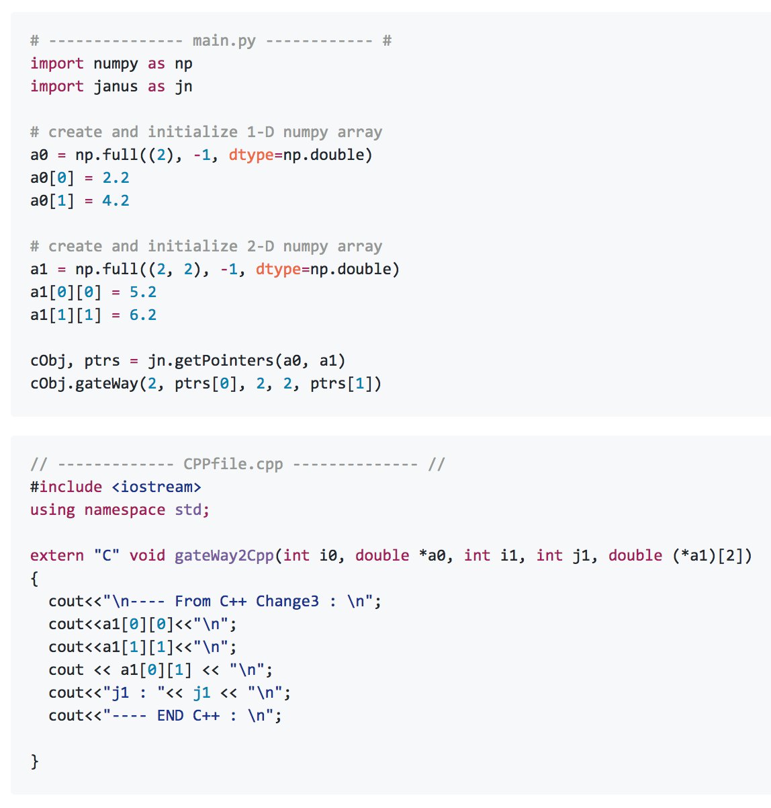

GitHub Projects :
> Janus | Github Link
Janus is a python wrapper for interfacing numpy array to C++ array. c-types does the same job for C but there is no such library for C++. There are many libraries for extending python to C++ but I couldn't find a simple way to interface numpy array to C++ array. For detailed example please follow the github link.

For compiling C++ code run "compile.py" first and then you can run the python code.
> Cpy | Github Link
Cpy is a python wrapper built on top of IBM ILOG Cplex Python API. I find the default API somewhat low level, and if you are migrating from Java, then it could be bit difficult initially. Also the code readabilty of the default Python API is not good. The wrapper is very much similar to the Java API. For detailed example please follow the github link.